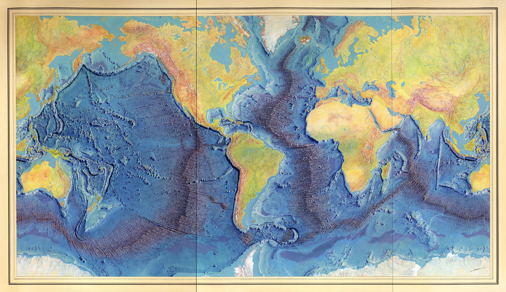
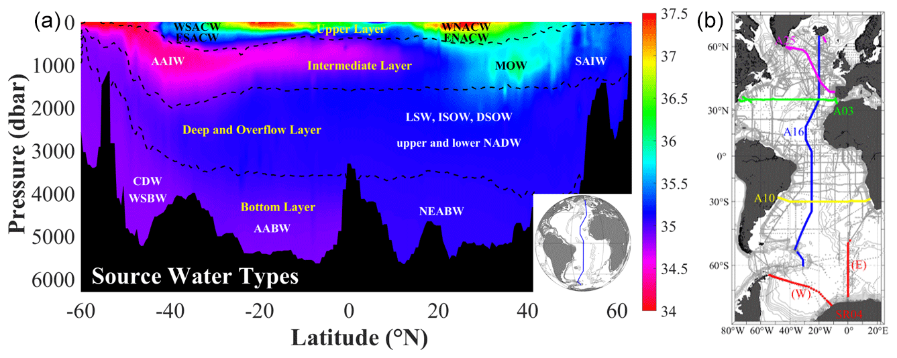
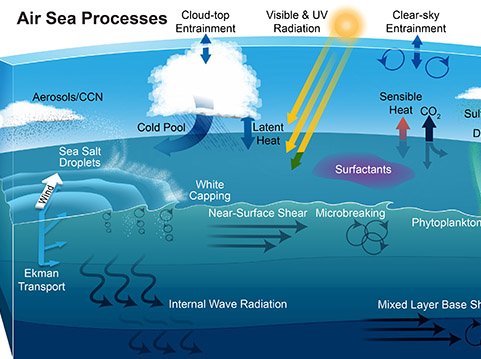

01 / BATHYMETRYArticle publishedFOUNDATIONS
The Shape of the Ocean
Mountains, ridges, shelves, and trenches: discover the extraordinary landscape hidden beneath the ocean's surface.
FROM A LIFE ON THE OCEAN TO SCIENCE FOR EVERYONE
My curiosity began with dolphins off the Florida Gulf Coast and carried me to research vessels in the North Pacific and a life on Oʻahu. Here I bring those experiences together with real observations and public data, so anyone can explore the science behind the stories.
START HERE
For me, it began with a childhood memory of dolphins. It continued across research decks in the North Pacific, through the study of internal waves, and now along the coast of Oʻahu. The questions have changed, but the curiosity has never left.
Open Oceanography brings that personal history into the classroom without turning the classroom into a barrier. Start with a story, explore the observations, and make your own discoveries using the same publicly available data oceanographers work with.
THE LEARNING LIBRARY
Each lesson begins with a story and leads toward the science. Interactive notebooks let you investigate real data in your browser.

01 / BATHYMETRYMountains, ridges, shelves, and trenches: discover the extraordinary landscape hidden beneath the ocean's surface.

02 / WATER PROPERTIESWhy temperature, salinity, and density matter, and how layers of seawater shape the ocean below the surface.

03 / AIR & SEAExplore the movement of heat, water, and momentum across the sea surface, and how winds connect ocean and atmosphere.
OUR MISSION
Our oceans are observed by scientists, research vessels, satellites, and public monitoring networks. Much of this information is available to everyone, but knowing how to find and understand it is another challenge.
Scientists have stories worth telling, and communities have a right to understand the systems that shape their lives. I use firsthand experience and reproducible analysis to connect people to the public institutions and observations that make environmental awareness possible. Data literacy is part of that mission, but so is defending the public's ability to access the science they fund.
Read the story behind the initiativeBEHIND THE SCIENCE
My work in physical oceanography began aboard research vessels in the North Pacific and led to studying internal waves in Barkley Submarine Canyon. Today I work in data science and environmental forecasting. Open Oceanography connects those experiences to lessons that anyone can explore. The thesis defense below is one piece of that journey.
Watch the full thesis defenseKEEP EXPLORING